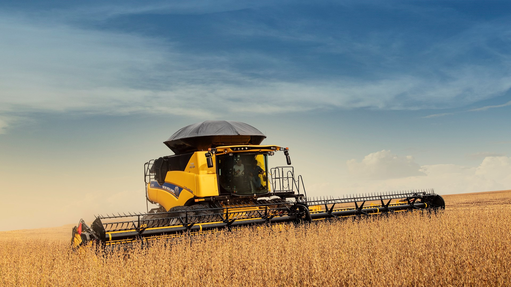

Qual a importância do uso do Celular na agricultura?
É crucial para a gestão eficiente da produção, comunicação e acesso a informações.

Benefício do celular no agro
O uso do celular no agronegócio traz diversos benefícios, desde a gestão mais eficiente da produção até a redução de custos e riscos. A conectividade que o celular oferece permite que os produtores monitoram suas lavouras de forma remota, identificam pragas e doenças precocemente e acessam informações e ferramentas que auxiliam na tomada de decisões.
.jpg "Imgem sobre Gps Agrícola .Fonte Google images")
Exemplos
Comunicação e colaboração: O celular permite que os produtores se comuniquem com seus colaboradores, técnicos, fornecedores e clientes, facilitando a organização do trabalho e a colaboração entre diferentes partes interessadas.
Acesso a serviços: O celular permite o acesso a diversos serviços on-line, como serviços de diagnóstico de plantas, plataformas de comércio eletrônico e serviços de consultoria técnica.
Aumento da produtividade: A gestão mais eficiente, a redução de riscos e o acesso a informações e ferramentas de apoio contribuem para o aumento da produtividade e do lucro dos produtores.
Fim!